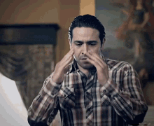

Parte 1
El día previo al cumpleaños de Antonio
Lucía, necesito tu ayuda. Necesito que te reúnas con todos los invitados en el centro comercial. Allí también se reunirá la banda y la carreta de shucos. Cuando todos estén listos, nos avisas por WhatsApp y agarran camino hacia la casa. Frankie, mi hermano, te estará apoyando y cualquier cosa me escribes. Ya está todo organizado para el gran día; espero que Antonio se la pase muy bien. Le demostraré a Carmen, mi esposa, que sí soy capaz de hacer buenas fiestas sorpresa.
{kind=link}
Parte 2
Al día siguiente en la tarde
Ya recibí el Whatsappaso de Lucía, vamos ahorita. Salimos de la casa y yo, al igual que Antonio, estaba emocionado por la fiesta, ¡quiero ver su reacción! (al igual que la de Carmen claro). Llegamos a la casa de Lucía y cuando entramos, yo ya sabía que no iba a haber nadie dentro. Pero me empecé a poner nervioso porque no aparecía nadie y supuestamente ya tendrían que haber aparecido todos. Le pedí a Carmen que llamara a su hermana, pero ella no contestó. Luego recibí una gran maltratada por parte de Carmen y Antonio estaba llorando. ¿¡Donde están todos!? Me recordé que Frankie andaba con ellos y lo llamé. Llamé y llamé y como a la décima llamada contestó… No podía creer lo que había pasado. Y ahora, ¿cómo se lo comunicó a Antonio?
{kind=link}